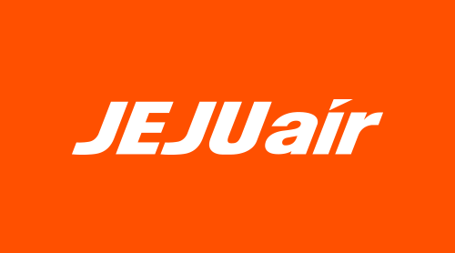
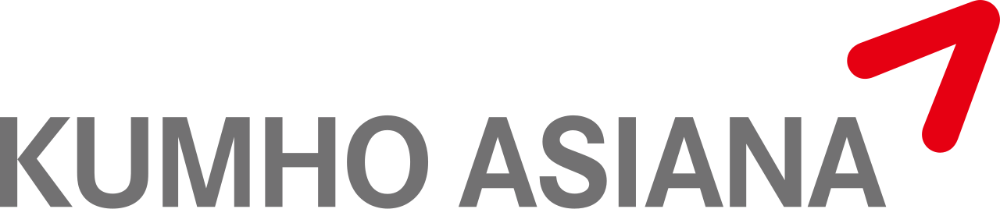
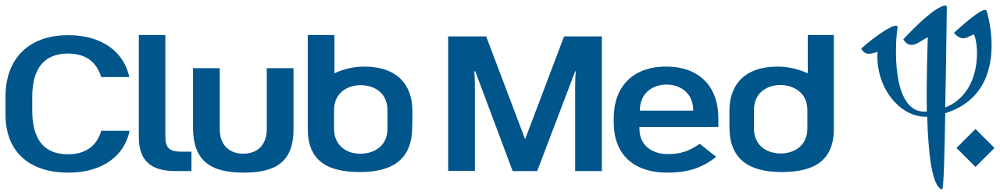

홈 > 브랜드 매거진 > 티웨이항공
티웨이항공
티웨이항공(T'way Air)은 한국의 저비용 항공사로, 한성항공을 재편해 2010년 출범했다.
산업 분야 여행·호스피탈리티 · 공개 등급 자료 기반 · 브랜드 평가 4.1 ★
한눈에 보는 브랜드
티웨이항공은 대한민국을 대표하는 저비용항공사(LCC) 중 하나로, 2003년 청주 기반 한성항공으로 출발해 자금난으로 운항을 멈춘 뒤 2010년 신규 자본 유입과 함께 티웨이항공으로 새 출발했다. 김포-제주 국내선에서 재취항한 이래 국제선과 중장거리로 사세를 키웠으며, 2025년 대명소노그룹(현 소노트리니티그룹) 편입과 트리니티항공 사명 전환이라는 두 번의 큰 전환점을 맞았다.
항공기 약 46대를 운용하는 중견 항공사로 성장했다.
브랜드 관점
티웨이를 한국 LCC 가운데 특별하게 만든 것은 두 가지 결단이다. 첫째, 저비용항공사 최초로 광동체기를 들여와 인천-자그레브를 시작으로 파리·로마·바르셀로나·프랑크푸르트 등 유럽 장거리에 진입하며 '20만원대 유럽'이라는 가격 파괴를 실현했다.
둘째, 호텔·리조트 대기업 대명소노그룹이 약 2,500억원을 투입해 경영권을 확보하고 항공과 숙박을 묶는 여행 생태계를 그렸다는 점이다. 이는 단거리 위주 경쟁에 머물던 제주항공·진에어와의 구도를 흔들어, 티웨이를 LCC 매출 선두권으로 끌어올렸다.
한국 독자에게 이 변화는 '저가=단거리'라는 통념이 깨지고 항공·여가 산업이 융합되는 신호로 읽힌다. 다만 2조원에 육박한 부채와 유럽 노선 수익성은 풀어야 할 숙제로 남아 있다.
시작과 성장
2000년대 초 한국 항공시장은 대한항공·아시아나 양강 구도였고, 저렴한 항공권에 대한 갈증이 커지던 시기였다. 이 틈을 파고든 것이 2003년 설립돼 2005년 청주공항을 거점으로 ATR 터보프롭기를 띄운 한성항공으로, 국내 첫 저비용항공사로 기록된다.
그러나 반복된 자금난과 경영권 분쟁으로 2008년 운항을 멈췄다. 첫 전환점은 2010년으로, 신규 투자자가 약 150억원을 넣어 인수한 뒤 보잉 737-800 두 대로 티웨이항공이 출범했고 그해 김포-제주에 복귀, 이듬해 국제선 면허를 받아 방콕에 첫 국제선을 띄웠다.
두 번째 전환점은 2024년 자그레브 취항으로 시작된 유럽 중장거리 진출과 2025년 대명소노그룹의 인수, 그리고 2026년 트리니티항공으로의 사명 변경이다. 사명 '트리니티'는 라틴어 '셋이 하나로 완전함을 이룬다'에서 따왔다.
브랜드 아이덴티티
티웨이의 브랜드 핵심 가치는 친근함과 합리적 즐거움이다. 모두 소문자로 쓴 로고는 기성 항공사의 권위적 틀을 깨려는 의도를 담았고, 어포스트로피 기호는 고객의 목소리를 듣겠다는 소유격이자 말풍선을 형상화했다.
비주얼은 축제의 흥겨움을 떠올리는 카니발레드와 안정감을 주는 퀸앤그린을 함께 쓴다. 슬로건은 초기 't'way to travel'에서 'Happy T'way, it's yours'로 바뀌며 여행의 주인공이 고객이라는 메시지를 강조했다.
타깃은 가격에 민감하면서도 경험을 중시하는 합리적 여행 소비층이며, 보이스는 격식보다 경쾌하고 솔직한 톤을 지향한다.
제품과 서비스
국내선은 김포·제주 중심, 국제선은 일본·동남아·중화권 등 중단거리에 더해 유럽·오세아니아까지 아우르는 중장거리로 확장됐다. 기단은 협동체 보잉 737-800과 737 MAX 8, 광동체 에어버스 A330(-200/-300)과 보잉 777-300ER로 구성된 약 46대 규모이며, 차세대 A330-900neo 도입도 예정돼 있다.
예약은 자사 웹·모바일 앱과 여행사 등을 통해 이뤄진다.
현재 상태
본사는 서울 강서구 마곡지구 르웨스트시티타워로 이전 중이며, 지배구조상 최대주주는 소노인터내셔널로 대명소노그룹에서 이름을 바꾼 소노트리니티그룹 산하에 편입됐다. 국가는 대한민국.
현재는 2026년 트리니티항공으로의 사명 전환을 확정하고 호텔·항공 통합 전략을 본격화하는 단계로, 중장거리 확대와 수익성·재무구조 개선을 동시에 추진하고 있다. 세부 재무 수치 일부는 공시 기준에 따라 변동되어 미공개 항목이 있다.
타임라인
정리된 연도형 이벤트가 없습니다.
BI/CI 변천사
함께 읽을 브랜드

여행·호스피탈리티 · 자료 기반제주항공제주항공(Jeju Air)은 애경그룹 계열의 항공사로, 2005년 설립된 한국 최초이자 최대 저비용 항공사(LCC)다.
여행·호스피탈리티 · 자료 기반진에어진에어(Jin Air)는 대한항공(한진그룹) 계열의 저비용 항공사로, 2008년 설립됐다.
여행·호스피탈리티 · 자료 기반대한항공대한항공(Korean Air)은 한진그룹 계열의 대한민국 대표 국적 항공사로, 1969년 한진이 국영 항공사를 인수해 출범했다.

여행·호스피탈리티 · 자료 기반아시아나항공아시아나항공(Asiana Airlines)은 1988년 설립된 한국 2위 항공사로, 2024년 대한항공에 인수됐다.
YO
YO!
브랜드·비즈니스 · 편집 검수YO!YO!는 2016년에 기록된 Designed by Paul Belford Ltd 계열의 브랜드 아이덴티티 사례입니다. Paul Belford Ltd가 아이덴티티 작업...
 여행·호스피탈리티 · 자료 기반야놀자
여행·호스피탈리티 · 자료 기반야놀자야놀자(Yanolja)는 2005년 이수진이 창업한 한국 1위 숙박·여행 예약 플랫폼이자 트래블 테크 기업이다.

여행·호스피탈리티 · 자료 기반클럽메드클럽메드(Club Med)는 1950년 설립된 프랑스 기반의 올인클루시브 리조트·여행 브랜드이다.
여행·호스피탈리티 · 편집 검수탐스탐스는 제품 구매를 개인의 선의와 연결한 참여형 브랜드다. 신발은 상품이지만, 브랜드의 차별성은 소비자가 구매 행위를 통해 사회적 의미에 참여한다고 느끼게 만든 구조...